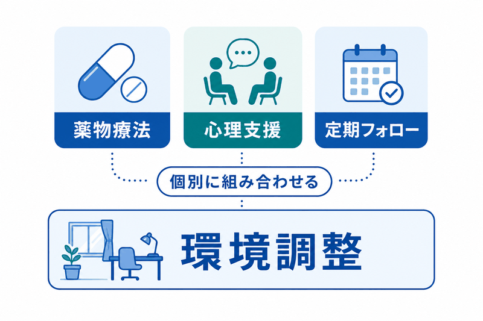

<!doctype html><html lang="ja"><meta charset="utf-8"><meta name="viewport" content="width=device-width,initial-scale=1"><title>成人ADHD 図の拡大</title><link rel="canonical" href="https://tools.ichisouzo-lab.com/infographics/adult-adhd-guide-reference-repair-20261029/treatment.html"><style>body{font-family:Meiryo,sans-serif;margin:0;padding:16px;color:#16314d}main{max-width:1200px;margin:auto}img{max-width:100%;height:auto}button,a{font-size:1rem;padding:8px}#viewer.native img{max-width:none}#viewer{overflow:auto;max-width:100%}</style><main><h1>成人ADHD</h1><p><a href="https://blog.ichisouzo-lab.com/entry/2025/05/12/055516">記事へ戻る</a> <button id="zoom" aria-pressed="false">原寸で表示</button></p><div id="viewer"></div><p>図の医学的な条件と出典は記事本文をご覧ください。</p></main><script>document.getElementById("zoom").onclick=function(){var e=document.getElementById("viewer");e.classList.toggle("native");var a=e.classList.contains("native");this.setAttribute("aria-pressed",a);this.textContent=a?"幅に合わせる":"原寸で表示";};</script></html>